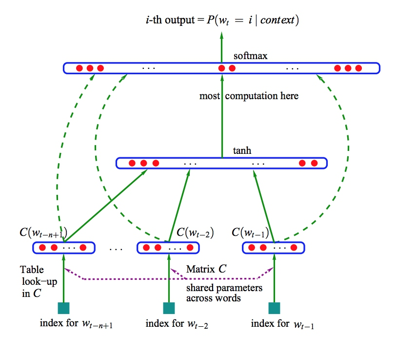
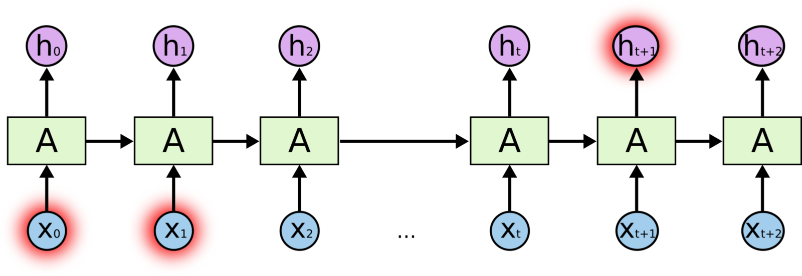
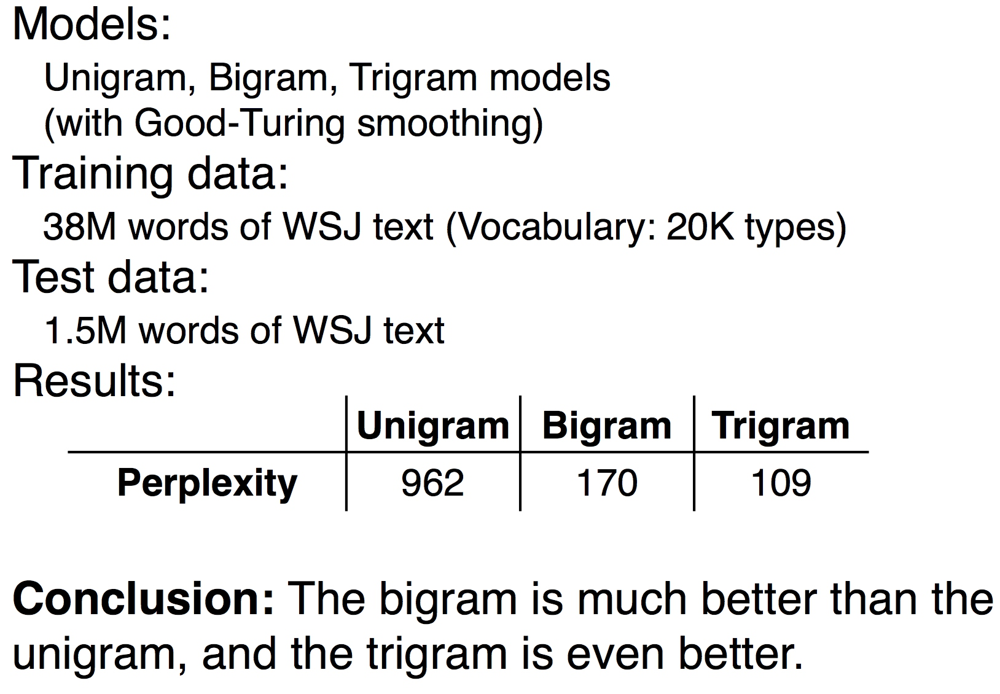

语言模型(Language model, LM)在自然语言处理中占有重要的地位，尤其是在基于统计语言模型的语音识别、机器翻译、中文分词和句法分析等相关研究中有着广泛的应用。
因为工作上主要做的都是些跟文本挖掘的相关项目，大部分技术都是和NLP相关的。而语言模型又是NLP上一个很基础但很重要的概念，本文就简要总结了一些工作中经常用的语言模型。
1. 统计语言模型
1.1 介绍
通俗的说，语言模型就是用来计算一个句子的概率的概率模型，它通常被描述为字符串s的概率分布\(P(s)\)。这里的字符串s由l个“基元”组成，基元可以是字、词或者短语等。于是句子s的概率可以表示为所有基元的联合概率分布：
利用bayes公式将其转变为：
而上式中的条件概率\(p(w_1),p(w_2|w_1), p(w_3,|w_1, w_2)...\)就是语言模型的参数。当这些模型都计算出的时候，对于任何一个给定的句子s都可以通过将对应的条件概率相乘的方法很快得到句子的概率了。不同的模型计算这些参数的值的方式不同，常用的方法有n-gram，决策树，最大熵模型神经网络等等。
1.2 模型缺点
上述模型看上去非常简单，但是通过简单估算我们可以发现其中存在的问题。对于一个大小为N的词典D来说，一个长度为l的句子s，这其中需要的参数就是\(N^l\)个。在这种计算方法中，第i个词是由前i-1个词(历史词)推出的，随着历史词个数的增长，参数个数按指数级增长。这就会导致两个问题：
- 参数空间过大，我们根本无法从训练语料中得到所有的参数，因为大部分的情形在训练语料中根本就没出现
- 数据稀疏严重，对于没有在语料中出现的组合，根据最大似然估计就会得到这个参数为0，这将导致整个句子的概率为0
2. N元语法(N-gram)模型
2.1 马尔可夫假设
为了解决之前讲的参数空间过大的问题，引入马尔科夫假设：一个词出现的概率只和它前面出现的一个或有限的几个词有关：
可以看到通过这样的方式，模型的参数就得到了大大减少。
2.2 N元语法
满足上面的条件的模型就被成为n元语法，其中的n对应考虑的不同历史词个数。通常情况下，n不能取太大的数，否则的话，参数个数过多的问题还是会存在，常用n=1，2，3 n=1时的模型被称为一元语言模型(Uni-gram)，它表示的是句子中每个词之间是条件无关的，也就是说所需要考虑的历史词为0，即
对于\(n\geq 2\)的情况，每个词与其前n-1个词有关，即
然后根据最大似然估计，这些条件概率的计算就是在语料中统计这些词组合所出现的概率，即：
从中可以看出，n的增大会增加模型的复杂度。虽然理论上n越大，模型的效果越好。但是当n很大的时候，需要的训练语料也会很大，而且当n大到一定程度时，其对于模型效果的提升越来越少，通常使用n=3就已经满足要求了。
2.3 平滑问题
即使是使用n=2的情况，也不能保证语料空间能够涵盖真实的语言模型空间。如果单纯的考虑词频比例作为参数进行计算的话就会碰到两个问题：
- 当\(count(w^k_{k-n+1}) = 0\)时，是不是就能说明概率\(p(w_k|w^{k-1}_1)\)就是0呢？
- 当\(count(w^k_{k-n+1})=count(w^{k-1}_{k-n+1})\)，能否认为\(p(w_k|w^{k-1}_1)\)为1呢？
显然上面的两种情况都是不能，考虑0或1这两个极端情况都会导致整个句子的概率过大或过小，这都是我们不希望看到的。然而，无论语料库有多么大，都无法回避这个问题。平滑化方法就是处理这种问题的，具体的方法有很多，由于平滑算法不是本文的重点，这里就不细说了。
计算n-gram的一个常用工具是SRILM，它是基于C++的，而且里面也集成了很多平滑方法，使用起来非常方便。
2.4 N-gram小节
n-gram模型简单来说就是在给定的语料库中统计各个词串出现的次数，并进行适当的平滑处理。之后将这些值存储起来，在计算出现句子的概率时，找到对应的概率参数，相乘即得到总的概率值。
3. 神经网络语言模型
3.1 基础框架
上面N-gram模型的求解看上去更像是一种无监督的方式，简单的统计词串出现的次数，模型也就确定了。然后在使用的时候，再用这种参数相乘做预测就好了。
但是在机器学习领域我们见到的最常见的一种建模方式应该是：
- 对考虑问题建模，这个时候也就是确定模型的参数和输入输出
- 构造目标函数
- 利用训练样本对目标函数进行优化，从而得到模型参数的值
对于统计语言模型来说，同样可以这样考虑。对于一个词w，它出现的概率由其上下文context(w)决定，为\(p(w|context(w))\)，根据最大似然的定义，对于训练语料中所有词，得到目标函数为：
其中C为语料，context(w)表示词w的上下文，对于语言模型来说，通常考虑的上下文只有词的上文，即历史部分，上面的n-gram模型就是\(w^{i-1}_{i-n+1}\)。
显然这里的概率是不能按照之前的方式求的，否则就跟直接求n-gram参数没什么两样了。这里概率\(p(w|context(w))\)可以看作是一个关于w和context(w)的函数，即：
其中\(\theta\)为待定的参数，一旦得到\(\theta\)，模型也就确定了。之后的概率就可以通过F来求了，这样就避免了事先计算并保存所有的词串的概率，而是在需要的时候再计算。通过选择合适的模型，可以使得\(\theta\)的参数个数远远小于n-gram中的参数个数。
这里的关键也就在于函数F的构造，而神经网络语言模型就为其提供了一种构造方法。
3.2 模型介绍
提到神经网络模型可能会有人感到陌生，但是说起word2vec或者说词向量，大家就肯定熟悉了。其实词向量的诞生可以算是神经网络语言模型的附属产物，这个东西最初是构建神经网络语言模型的。但是作为附属产物，词向量由于其强大的语义表示得到了广泛应用。
说起神经网络语言模型，先得祭出Bengio大神论文中的这张图了：

这个模型就是上面提到的函数F的一种构造方式。接下来介绍一下在这个模型中，词w是如何和它的上下文context(w)联系起来的。
模型参数：
- 词向量矩阵(N * D)，D为词向量维度，N是词典大小，这个矩阵将每个字对应到一个低维向量
- 神经网络隐藏层的参数，这里有很多种可能，在Bengio论文中，他表示可以用简单的前向神经网络或者RNN或者其他什么参数模型都是可以的
- 最后的softmax投影层
结合上面的目标函数，这个模型的训练就是给定一个N个字的子句，将其前N-1个词对应到对应的词向量（注意这个词向量并非预先知道的，而是随着模型训练一起得到的），然后经过模型最后经过softmax输出预测新的词，
不过细心的朋友肯定发现了，这个softmax计算量是非常大的，因为通常来说基于词的词典大小经常是10万级的，而字相对来说就好的多，大概1万左右。即使隐藏层维度设置为100，每一步预测都要做一个100*10w = 1000w级的计算是十分耗时的。因此Bengio原始论文中的算法训练起来非常困难，好在后来在Mikolov的word2vec中，对模型进行了优化改进使得训练效率得到了很大提升。
模型优化主要也是针对最后面的softmax输出层的，大致的两个思路是使用Huffman树构建Hierarchy的softmax，这样就讲O(n)转变成了O(logn)，还有一个就是采用Negative Sampling的方法。由于这些优化不是本文重点，以后在讲word2vec的时候再细讲吧。
3.3 词向量的优势
之前的N-gram中，词的特征也可以看作是一种向量，不过是非常稀疏的one-hot向量。这个向量有很多问题，维度非常大，有多少词，就有多少个维度。其次就是向量直接的相似性不好衡量，由于向量之间是正交的，任意两个向量做向量相乘得到的结果都是0.
而通过神经网络语言模型得到的词向量可以看作是将稀疏的高维one-hot词向量转变成了稠密的低维向量，除了相似性以外，词向量还有很多inference相关的有趣特性。
最后相对于N-gram需要进行复杂的平滑处理，词向量自带平滑效果，因为即使是对于词w，没有出现的context(w)时，\(p(w|context(w)) \in (0, 1)\)，并不是为0.
4. RNN神经网络语言模型
好的语言模型应该至少捕获自然语言的两个特征：语法特性与语义特性。语法特性通常只需考虑生成词的上下文，属于局部特征，在这点上也许N-gram做的不错。但是对于语义特性来说，通常需要考虑的上下文就要长的多。而N-gram通常只能考虑到n=3的情况，明显是无法满足要求的。
而上面的神经网络语言模型虽然较n-gram模型来说具有更强大的表现力和更好的泛化能力，但是同样无法捕捉更长的全局语义信息。比如说，在自然语言中，经常出现的he和himself会出现在比较远的地方，通过上文的神经网络语言模型，即使考虑的句子长度涵盖了这两个字，但是由于混入中间的信息过多，也无法保证能够将其相连(加入attention机制可能对这个问题有帮助)。
为了解决这些问题，Mikolov提出了基于RNN的循环神经网络，使用RNN的隐状态来作为对词序历史信息的记录，使其能够捕捉到句子中的长期依赖。
近年来，随着RNN模型的相关发展，特别是LSTM和GRU等RNN单元的提出，使得基础RNN中在处理长期依赖时遇到的梯度消失问题得到了很大的改善。RNN序列模型处理长期依赖的能力得到了很大的提升，作为一种新的表示方式，RNN/LSTM的语言模型在很多领域都取得了优于N-gram的结果成为主流模型。
模型介绍
接受了神经网络语言模型引入的词向量概念后，再理解RNN神经网络语言模型就不难了。RNN神经网络语言模型在github有很多相关的项目，很多都是基于LSTM做的生成古诗，歌词等内容的模型。这些在基础结构上大致是一样的，只是用了不同的数据集去训练基于当前数据集的语言模型，然后再利用现有的语言模型做Inference。
RNN的基础结构如下：  用在语言模型上，更像是一种sequence模型，其实机器翻译中经常用到的Seq2Seq模型中的decoder部分通常就是这个模型。
因为之后打算再开一篇博客专门讲一下这个模型，这里就先简要介绍一下。这个模型的预测和之前的模型不同的一点是输入是一个一个传入模型的。例如将第一个词作为\(x_0\)，然后得到RNN的隐状态，对于下一个时刻，传入第二个词\(x_1\)和上一刻的隐状态输出，依次这样进行，根据t-1时刻的输出，经过softmax进行t时刻字的预测。这样进行的前提是假设RNN隐藏层的状态已经包含了过去词的信息了。
5. 模型评价
在机器学习中，如何进行模型的评价一直是一个很重要的问题。如果评价的准则都出错了，我们很可能就会错过好的模型而去选择差的模型。而对于语言模型来说，通常有两种评价方式。
- 基于特定任务的extrinsic评价方式
- 基于模型本身的intrinsic评价方式
5.1 Extrinsic(task-based)
语言模型很多时候只是一个中间模型，最终也是为特定任务服务的，有的时候结合任务来看比起单纯的衡量语言模型更有意义。
这种做法就是将不同的语言模型接入到同一套任务中，比如说语音识别，最后通过语音识别任务结果的好坏来评价语言模型。
5.2 Intrinsic - Perplexity
对于序列\(w_1, w_2,...,w_n\), Perplexity混淆度(PPL值)的定义为：
Perplexity表示的是对于一个句子，用语言模型计算其概率值，并且根据序列长度做规范化后的倒数。
于是可以知道最小化perplexity就等价于最大化概率。通常来说，由于概率相乘很容易导致小数溢出的情况，于是通常使用其log表示。
因此，对于一个合理的测试句子集合，一个好的模型的ppl值应该是要小于一个差的模型的。在实际中，我们就可以分出一部分数据作为测试集，在语言模型的训练过程中进行测试保留最优的模型。
注意: 由于语言模型是和所用到的训练数据挂钩的，如果用一个根据诗歌去训练的语言模型，去计算给定一篇散文的ppl值那肯定是不合理的。因此不同语言模型的ppl值比较必须是使用同一套数据集训练的情况下才有意义。
这里给出一组对于N-gram在不同n值情况下ppl值的比较结果：

可以看到n=2对于n=1有个大的提升，n=3对于n=2有提升，但是提升效果已经弱多了。虽然理论上n=4效果会更好，但那需要更多更全的数据集，更耗时的训练时间，通常不会使用。
6. 语言模型总结
参考文献
[1] 统计自然语言处理 - 宗成庆
[2] A Neural Probabilistic Language Model - Yoshua Bengio, et al
[3] word2vec 中的数学原理详解 - 博客园用户peghoty
[4] Distributed Representations of Words and Phrases and their Compositionality - Tomas Mikolov, et al
[5] Recurrent neural network based language model - Tomas Mikolov, et al
[6] Evaluating language models - Julia Hockenmaier